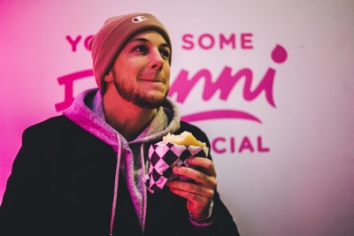
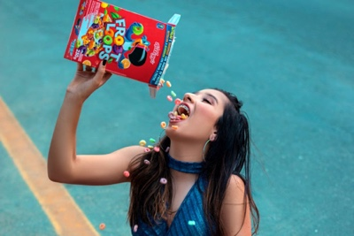
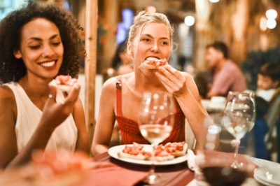
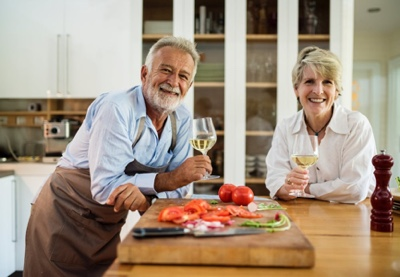
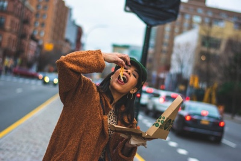

Our Current Members
|  |
Johnny R is the current Brunchmaster General. He has been brunching for 11 year and has a keen interest in the artistry behind waffles. |
|  |
Allison J is the current President and First Tiger of Brunch Club. She prefers sweet breakfasts to savoury ones, and has completed a masters thesis on the use of cereal milk dairy based desserts. |
|  |
Jeanie and Janine are twin sisters who share a love of pastries and lattes. They have been brunching for a combined 18 years and routinely purposefully order two different meals so they can share them both. |
|  |
Martin and Peggy Cartier are the newest members of brunch club. they bring two lifetimes of experience to the club and have a particular interest in the pairing of syrups with savoury meals. |
|  |
Jenny Aguilar is the current Deputy Brunchmaster General. She comes to brunch from a dinner-based background. Her hobbies include making pizza and drinking craft beer. |